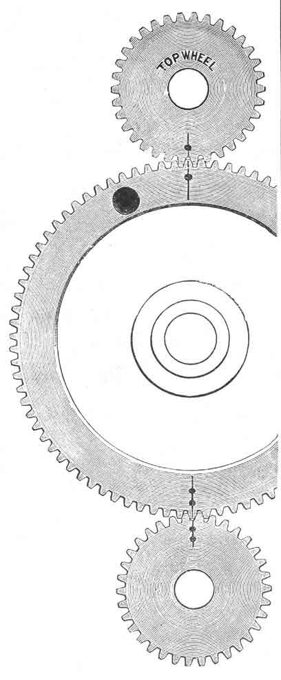

INSTRUCTIONS FOR OPERATING THE
HAND
SEWING MACHINE
~~~~~~~~~~~~~~~~~~~~~~~~~~~~~~~~~~~~~
Jones' Sewing Machine Co. Limited,
GUIDE BRIDGE,
Near Manchester.
This Machine has the New Double Feed feeding on both sides of the needle, which carries the work straight,
and passes thick seams easily and without any difficulty.
WHEN ORDERING PARTS PLEASE STATE PLAINLY FOR
HAND MACHINE
TO READJUST THE DRIVING OR GEAR WHEELS

Never remove the Driving Wheel or principal working parts of the machine from their present position,or the machine will require to be returned to us for re-adjustment (which causes trouble and expense), or you will require to carefully carry out the following instructions: -
Keep turning the wheel until you find the top and bottom marks on the large wheel come exactly opposite the marks on the top and bottom small wheels, like drawing, which is sure to take place before you exceed 17 turns if the machine is timed right. If not timed right, take out the screw at the end of the balance wheel, which is a left-hand screw, and by turning this screw to the right, you loosen it; then take the balance wheel off large gear wheel; and pull the large gear wheel out of gear, turning both small gears round until the marks come directly opposite the marks on the large gear wheel, then push the large gear wheel in gear again, and replace balance wheel on large gear wheel, securing it to the end with the left-hand screw.
OILING THE MACHINE
The Arrows show the places where the Machine is to be oiled.
Never get any oil on the leather pulley of Winder, and be sure and keep the inside of Balance Wheel,
where this leather pulley works, clean and free from oil.
Turn machine completely over, resting it on the bobbin pin and needle bar.
NOTE: The operator may occasionally remove the cloth plate to clean and oil the parts underneath,
but no other part of the Machine must ever be taken apart or tampered with.
________________________________________________________________________________________
NO MACHINE WILL WORK SATISFACTORILY UNLESS KEPT THOROUGHLY CLEAN AND WELL OILED.
________________________________________________________________________________________
NOTE: - When ordering parts, state that they are for HAND Machine. Always send the old or broken parts as a sample, or give number of the article from the plate of parts. Particular attention to this will save loss of time and annoyance. If you cannot send the broken old part - lay the part on a piece of paper and scribe round with a pencil, so that we may see the exact size and shape of the article wanted.
SENDING MACHINES TO BE REPAIRED
All Machines or parts sent for repairs should have the owner's name and address attached to them, together with instructions as to the nature of the repairs required. Unless this be strictly attended to, we cannot be held responsible for the safe return of any Machine.
| Names
and numbers of the several Parts for New Style of Machine. |
|
| 1 Balance Wheel 2 Large Gear 3 Large Gear Stud 4 Lock Screw for Gear Stud 5 Screw to hold Balance Wheel on Machine 6 Balance Wheel Handle 7 Balance Wheel Handle Screw 8 Balance Wheel Bolt 9 Balance Wheel Bolt Nut 10 Balance Wheel Bolt Pin 11 Balance Wheel Bolt Spring 12 Feed Cam 13 Feed Cam Pin 14 Feed Cam Roller and Stud 15 Small Gear 16 Small Gear Screw 17 Top Shaft 18 Bottom Shaft 19 Needle Bar (only) 20 Needle Bar Cam 21 Needle Bar Cam Screw 22 Needle Set Screw 23 Needle 24 Cam Wheel (only) 25 Cam Wheel Pin 26 Cam Roller and Stud 27 Shuttle Carrier Slide (top) 28 Shuttle Carrier Slide (bottom) 29 Shuttle Carrier 30 Shuttle Carrier Spring 31 Shuttle Carrier Spring Screw 32 New Patent Shuttle recessed 33 Spring Latch inside Shuttle 34 Spring Latch Rivet 35 Shuttle Tension Screw 36 Shuttle Thread Guide 37 Shuttle Reel 38 Foot Bar only 39 Presser Foot Lifter 40 Presser Foot Lifter Screw 41 Post Block to Pressure Bar 42 Post Block Screw 43 Foot Bar Spring (spiral) 44 Presser Foot 45 Foot Screw for Quilting Guide 46 Braider 47 Spooler Frame 48 Spooler Presser Plate 49 Spooler Presser Plate Bar (wire) 50 Spooler Presser Plate Spring 51 Spring to hold Winder to Balance Wheel 52 Screw for ditto 53 Spooler Spindle 54 Spooler Pulley (leather) 55 Spooler Pulley Washer 56 Left Centre Pin for Spooler 57 Left Centre Ring
|
58 Left Centre Spring 59 Spooler Screw 60 Check Lever 61 Check Lever Spring 62 Tension Disc 63 Tension Disc Stud 64 Tension Thumb Nut 65 Tension Thumb Screw 66 Tension Screw Washer (leather) 67 Tension Spring 68 Check Lever Screw 69 Face Plate 70 Face Plate Screw 71 Feed Lever 71A Feed Rocker Stud 72 Feed Surface 73 Feed Surface Screw 74 Stitch Screw Spring 75 Screw for Spring 76 Stitch Screw 77 Leather Pad for end of Feed Lever 78 Leather Pad for centre of ditto 79 Feed Spiral Spring 80 Feed Spring Hook 81 Feed Spring Pin 82 Bed or Table 83 Bed Rubbers 84 Bobbin Peg 85 Top Arm Set Screw 86 Arm of Machine 87 Top Arm Steady Pin 88 Cloth Plate 89 Cloth Plate Slide 90 Cloth Plate Screw 91 Cloth Plate Pad (leather) 92 Cloth Plate Pad Rivet 93 Spooler Thread Guide (A) 94 Spooler Thread Guide on centre of Arm 95 Thread Controller 96 Large Oil Dripper 97 Small Oil Dripper 98 Screw for ditto 99 Cloth Washer for ditto 100 Double Hemmer 101 Guide Screw 102 Quilter 104 Shuttle Turnscrew 105 Screw Driver (large) 106 Packet of Needles 107 Oil Can 108 Guide or Tucking Gauge 109 110 Tension Release Lever 111 Tension Release Lever Stud 112 Tension Release Lever Stud Washer 113 Post Block Pin for Tension Releaser
|
NEEDLES, &c.
Needles and small articles can be sent by post to all parts of the country, on receipt of Post Office Order in payment. Stamps only for small sums under five shillings.
When any NEW PARTS are required,
wherever practicable, always send the old or broken part as sample or pattern; it saves endless time and annoyance. If you cannot send the broken part, lay the part on a piece of paper and scribe round with a pencil, so that we may see exact size and shape of the article wanted.
SENDING MACHINES TO BE REPAIRED.
All Machines or parts sent for repair should have the owner's name and address attached to them, together with instructions as to the nature of the repairs required. Unless this be strictly attended to, we cannot be held responsible for the safe return of any machine.